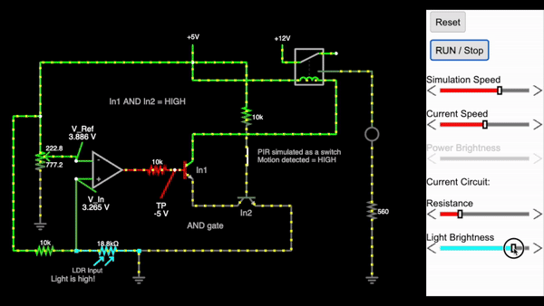

Automatic Lighting System
December 2023
Understanding Op-Amp Comparators
Before starting this project, it's essential to understand the core component used: the op-amp comparator.

For this project, I used Texas Instruments' LM358P op-amp. This particular comparator operates on a single 5V power supply, which makes it easier to work with. In its "True" state, it outputs 5V, and in a "False" state, it outputs 0V.
Project Overview
The automatic lighting system uses a comparator circuit to control a high-wattage lamp based on ambient light and motion detection. Here's a breakdown of the key components and their functions:
Components Used
- Power Supply: 5V for the control circuit
- TI LM358P Op-Amp: Chosen for its single power supply capability and low power consumption
- Light Dependent Resistor (LDR): Detects ambient light levels, with resistance that decreases as light intensity increases
- Potentiometer: Allows for adjustable light sensitivity when set up in a voltage divider manner
- PIR Sensor: Detects motion in the area, outputs HIGH when motion is detected
- 2 NPN Transistors (2N2222): Used to create an AND gate logic between low light and motion detection
- Relay Module with Optocoupler: Allows the 3.3V control signal from the AND gate to switch the 12V needed for the high-wattage lamp
- Resistors: Various values for current limiting and voltage division
- Red LED: Great for troubleshooting the circuit
Circuit Design and Implementation
1. I set up the circuit to test the TI LM358P in a comparator setting where I powered a simple LED.

After testing, I implemented the circuit in real life, as shown below.

2. Next, I integrated the PIR sensor. To meet the condition of (Light Comparator Circuit HIGH) AND (Motion HIGH), I created an AND gate using 2 NPN transistors.

3. Once the logic was working, I wired the output to a relay. The relay takes in a 3.3V input and outputs a 12V signal through an optocoupler and relay to control a high-wattage lamp.

Prototyping and Testing
After simulating the circuit, I soldered the components and designed a 3D-printed enclosure to house the project, making it both functional and presentable.
Conclusion
This project demonstrates the practical application of op-amp comparators in creating smart, energy-efficient lighting solutions. By integrating light sensing, motion detection, transistors, and relay control, we've created a system that automatically manages lighting based on environmental conditions.
I'm currently working on creating a PCB for this project and adding a timing feature to the lamp control. Stay tuned for updates!